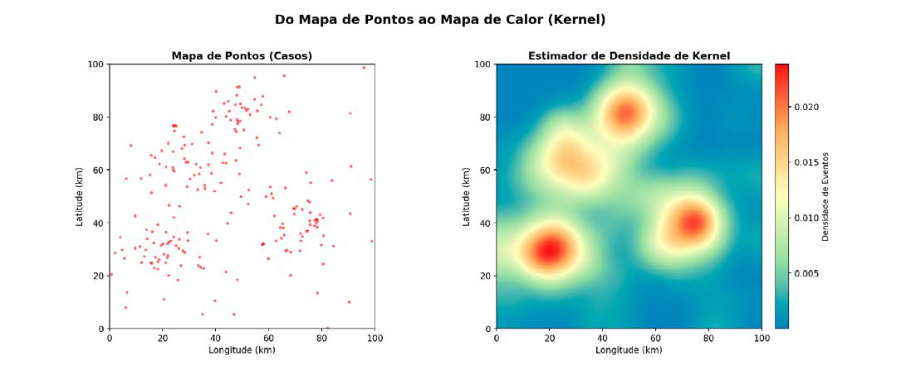
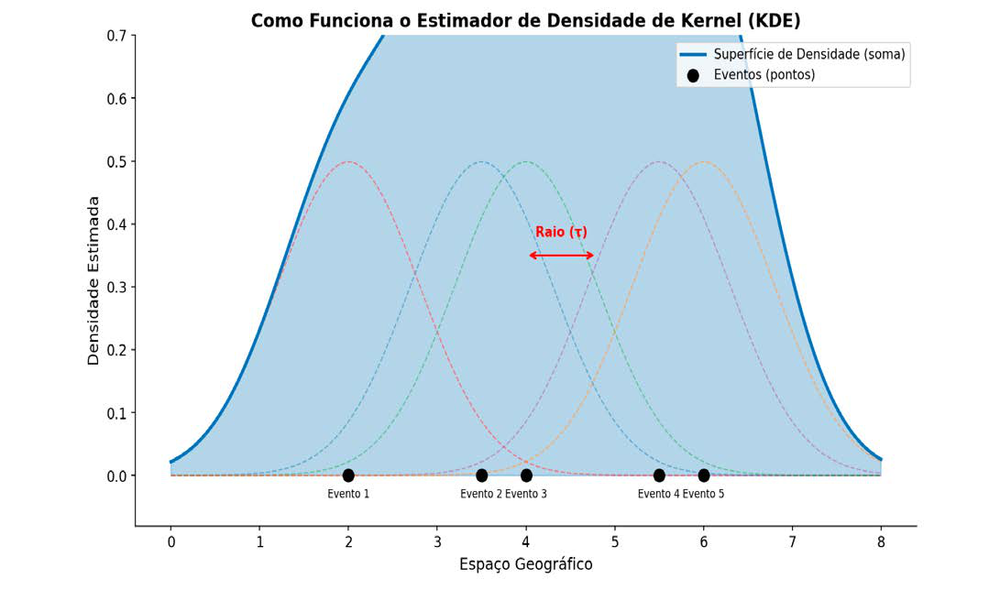
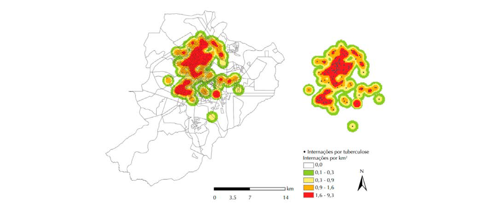

Módulo 3 | Aula 7
Análise Espacial de Dados – Pontos
Mapas de Calor (Estimador de Densidade de Kernel)
Uma das técnicas mais populares e visualmente intuitivas para analisar padrões pontuais é a criação de mapas de calor, tecnicamente conhecida como Estimador de Densidade de Kernel (Kernel Density Estimation - KDE). Este método permite estimar a intensidade do processo em toda a área de estudo, gerando uma superfície contínua que representa a densidade de eventos (Carvalho & Souza-Santos, 2005; Santos et al., 2007). É bastante utilizado na análise exploratória de dados espaciais (AEDE).
Figura 2 - Do Mapa de Pontos ao Mapa de Calor (Kernel).

Fonte: Elaborado pelos autores (2026).
A figura compara um mapa de pontos com um mapa de calor gerado por Kernel. No mapa de pontos, cada caso aparece como um ponto vermelho, mas a visualização fica dispersa e dificulta perceber padrões. Já o mapa de calor utiliza o estimador de densidade de Kernel para suavizar os pontos e destacar áreas com maior concentração de eventos: cores quentes indicam alta densidade e cores frias, baixa densidade. Essa técnica evidencia agrupamentos (hotspots) e facilita a interpretação espacial, revelando padrões que não são facilmente identificáveis no mapa de pontos.
O KDE funciona posicionando uma função tridimensional (o kernel) sobre cada ponto do mapa. A função atribui o maior valor ao local exato do ponto, com valores decrescentes à medida que a distância do ponto aumenta, até chegar a zero em um raio de influência (τ) definido. A superfície de densidade final é a soma de todas as funções de kernel individuais. O resultado é um mapa de gradientes de cor, onde as áreas “mais quentes” (geralmente em vermelho) representam maior concentração de eventos (Câmara, 2004, Santos et al., 2007).
Observando a figura, ficará mais fácil compreender:
Figura 3 - Como Funciona o Estimador de Densidade de Kernel (KDE).

Fonte: Elaborado pelos autores (2026).
A figura mostra o funcionamento do Estimador de Densidade de Kernel (KDE) ao transformar eventos pontuais em uma curva contínua de densidade. Cada ponto preto representa um evento no espaço, sobre o qual é aplicada uma função kernel — as curvas suaves tracejadas — que distribui sua influência ao redor. O raio (τ) determina até onde essa influência se estende. A soma dessas funções gera a curva azul, que representa a densidade estimada: quanto maior a sobreposição das curvas individuais, maior a densidade naquele local. Assim, o KDE converte pontos isolados em uma superfície contínua que facilita visualizar concentrações e identificar áreas com maior ocorrência de eventos.
A aplicação do estimador de Kernel é uma alternativa para analisar o comportamento de padrões de pontos e estimar a intensidade pontual do processo em toda a região de estudo. Para isto, pode-se ajustar uma função bidimensional sobre os eventos considerados, compondo uma superfície cujo valor será proporcional à intensidade de amostras por unidade de área (Câmara, 2004).
É muito usada em estudos de saúde para identificar concentrações espaciais de eventos de saúde. Ela transforma pontos, como casos, óbitos, focos etc., em um mapa de densidade, revelando as áreas com maior intensidade do evento estudado, chamado de hotspots ou áreas quentes. Foi utilizada, por exemplo, para descrever a distribuição espacial de internações evitáveis por tuberculose em Ribeirão Preto-SP, ajudando a identificar áreas com maior concentração de casos que demandavam atenção prioritária (Yamamura, 2016). Acesse em: https://www.scielo.br/j/rsp/a/St4S8zXDjKwP7gsrC89x8Rx/?format=pdf&lang=pt
Figura 1. Mapa de Kernel das internações evitáveis por tuberculose. Ribeirão Preto, SP, Brasil, 2006-2012.

Fonte: https://www.scielo.br/j/rsp/a/St4S8zXDjKwP7gsrC89x8Rx/?format=pdf&lang=pt
Neste estudo, os mapas gerados com a aplicação da técnica de Kernel mostram os locais com maior densidade de casos por quilômetro quadrado (km²) representados em vermelho. Observa-se distribuição heterogênea, com a formação de dois possíveis grandes aglomerados, concentrados principalmente nas zonas oeste e norte do município. Áreas sem ocorrência de internações foram predominantes na zona sul do município.